Страницы авторов "Тёмного леса"
Литературный Кисловодск и окрестности
Пишите нам! temnyjles@narod.ru
Институт геофизики НАН Украины, Киев, Украина
Поступила 9 июля 2008 г.
Представлено членом редколлегии В.И.Старостенко
Розглянуто основнi положення причинної механiки Козирєва. Запропоновано вважати, що константа причинної механiки - хiд часу c2 - дорiвнює швидкостi абсолютного руху Землi, утвореного суперпозицiєю космологiчних обертань. Ця швидкiсть надiйно визначена за дипольною складовою космiчного фонового випромiнювання 360 км/с. Проаналiзовано вимiри причинних сил, виконанi ранiше, i на їх основi за модернiзованою формулою причинної механiки Козирєва обчислено розподiл причинної сили в Землi, який пояснює спостережувану з пiвночi на пiвдень асиметрiю фiгури Землi: низьку Арктику, високу Антарктику, переважання материкiв у середнiх широтах Пiвнiчної пiвкулi, переважання океанiв - у середнiх широтах Пiвденної пiвкулi. Фiгура обертових тiл обумовлена суперпозицiєю сил тяжiння - вiдцентрової та асиметричної причинної; остання становить на поверхнi Землi (1 4 5) 10-5 сили тяжiння. У рiдкому ядрi причиннi сили можуть створити систему вихрових рухiв, iстотних для генерацiї магнiтного поля.
The main statements of N. A. Kozyrev causal mechanics have been considered. It has been proposed to consider the constant of causal mechanics - course of time c2 be equal to velocity of absolute movement of Earth, produced by superposition of cosmologic rotations. This velocity is reliably determined by the dipole component of cosmic background radiation and equals to 360 km/sec. Measurements of causal forces made earlier have been analysed and on their base distribution of causal force in the Earth has been calculated according to improved Kozyrev's causal mechanics formula. This distribution explains quanlitatively the observed N-S asymmetry of the Earth's figure: low Arctic, high Antarctica, predominance of continents in the middle latitudes of the Northern hemisphere, predominance of oceans in the Southern hemisphere. The figure of rotating bodies is formed by superposition of gravity, centrifugal and asymmetric causal forces, the last one being (1 + 5) 10-5 of gravity force on the Earth's surface. In the liquid core causal forces may produce the system of eddy motions essential for magnetic field generation.
| Н.А. Козырев (1908-1983) |
Выдающийся астрофизик XX века Н.А. Козырев в попытке преодолеть перспективу тепловой смерти Мира, предсказываемой Вторым началом термодинамики, в результате многолетних исследований звезд пришел к выводу о необходимости поиска универсального носителя энергии (и, возможно, информации), который обеспечивал бы долговременный расход энергии звезд, наблюдаемый по их светимости. Он предположил, что звезды и другие объекты получают энергию извне и что носителем этой энергии является время с физическими свойствами (возможно, этот носитель можно было бы назвать одним из видов физического вакуума). Козырев взял за основу принцип причинности, постулировал направленность времени, связал с последней направленность пространственных вращений, ввел константу хода времени и получил простые уравнения причинной механики. Асимметричные силы, предсказанные аксиомами причинной механики, Козырев изучал экспериментально на вращающихся объектах: гироскопах, Земле, планетах. Асимметричная сила измерялась только при наличии вибраций или другого необратимого процесса, механизм действия которых был и остается не вполне понятен. Повторяемость результатов была невысокой, что объясняется неконтролируемым наложением потоков времени от окружающих процессов. Козырев выполнил большое количество связанных с этим совершенно новых наблюдений и высказал ряд ярких идей, выходящих за рамки общепринятой парадигмы физики. Эти идеи пока не восприняты.
После смерти Козырева в 1983 г. были получены три научных результата, которые должны привлечь внимание к причинной механике Козырева: 1) движение Земли в космическом пространстве образовано иерархией космологических вращений, скорость этого движения измерена по дипольной части фонового излучения 360 км/с; константу хода времени причинной механики предлагается приравнять этой величине; 2) спутниковые миссии к Марсу установили северо-южную асимметрию фигуры Марса примерно такой же величины как на Земле; причинная механика предсказывает северо-южную асимметрию всех вращающихся тел; 3) Такеучи (1990, 2000) очень надежно двумя методами измерил асимметричную силу на вращающемся гироскопе (6x10-5 от силы тяжести), что хорошо согласуется с результатами Козырева и открывает перспективу для возрождения работ по причинной механике.
Научная биография Н.А. Козырева [2, с. 5-48]. Николай Александрович Козырев родился 2 сентября 1908 г. в Санкт-Петербурге в семье горного инженера. В 1924-1928 г. Н.А. Козырев прошел курс обучения на физико-математическом факультете Ленинградского университета. В студенческие годы он опубликовал 11 статей в немецких и английских научных журналах: об определении температуры солнечных факелов по данным собственных наблюдений, о результатах спектрального изучения солнечных пятен, о лучевом равновесии в них и теоретическое доказательство того, что пятна находятся значительно глубже в атмосфере Солнца, как это считалось в то время. С 1928 по 1936 г. Козырев работал в Главной астрономической обсерватории СССР Пулково: аспирантом и после защиты диссертации в 1931 г. - старшим научным сотрудником. Параллельно он читал лекции по теории относительности. Основное направление его научных исследований в эти годы - спектральные наблюдения Солнца и звезд и их интерпретация. В те годы в теоретическую астрофизику внедряются новые идеи, основанные на успехах квантовой физики, теории относительности, физики атомного ядра. Козырев вместе с будущим академиком, президентом Армянской академии наук В.А. Амбарцумяном в гуще этой работы. Они на равных обсуждают проблемы в составе неформальной группы молодых физиков-теоретиков, в которую входили Г.А. Гамов, Д.Д. Иваненко, Л.Д. Ландау и др. В 1934 г. Н.А. Козырев опубликовал в журнале "Monthly Notices of the Royal Astronomical Society" (London) большую статью о лучевом равновесии протяженных фотосфер звезд. Он впервые учел сферичность фотосфер, обосновал закон изменения плотности в них, использовал данные наблюдений для ряда типов звезд и получил результат, теоретически описывающий наблюдаемые закономерности. В том же журнале была опубликована и близкая по содержанию статья С. Чандрасекара, поступившая на полгода позднее. Новая теория получила имя Козырева - Чандрасекара, она общепризнанна. Козырев продолжал более углубленное теоретическое исследование внутреннего строения звезд путем анализа закономерностей наблюдательной астрофизики.
6 ноября 1936 г. Козырев был арестован и приговорен к 10 годам заключения: пытки следствия, два года в тюрьме, в 1939 г. этапирован в Норильские лагеря НКВД, с 1940 г. работал геодезистом, затем начальником Мерзлотной станции, в октябре 1941 г. снова арестован "за враждебную агитацию среди заключенных". Вот некоторые пункты обвинения: признание теории расширяющейся Вселенной, считает Есенина и Гумилева хорошими поэтами, во время драки в бараке заявил, что бытие не всегда определяет сознание, не согласен с высказыванием Энгельса: "Ньютон - индуктивный осел". Здесь видна надуманность обвинений и вместе с тем принципиальность и твердость характера Козырева. Таймырский суд прибавил ему еще 10 лет заключения, Верховный суд РСФСР счел приговор неоправданно мягким и заменил высшей мерой, но нависшая угроза не была приведена в исполнение возможно потому, что Козырев был популярной личностью как среди заключенных, так и тюремного начальства. Но главное, наверное, потому, что воюющей стране был нужен никель, специалистов остро не хватало и Козырева назначают инженером теплоконтроля на металлургический комбинат, затем инженером-геофизиком в Геологическое управление и начальником Магниторазведочного отряда (1943-1945). Все работы он выполнял творчески и успешно. За 9 лет тюрьмы и лагерей он пережил несколько смертельных ситуаций, вспоминать об этом не любил. О нем писали А.И. Солженицын, И.С. Шкловский, Г.С. Жженов, Л.Н. Гумилев. И все эти годы он продолжал обдумывать вопрос о природе звездной энергии. Вероятно, это и помогло ему выстоять и сохранить ясность мышления. Из заключения он вернулся с почти готовой докторской диссертацией.
В июне 1945 г. по ходатайству ведущих астрономов страны Козырев под конвоем был доставлен в Москву для пересмотра дела. Было установлено, что он является одним из создателей теоретической астрономии в СССР, все специалисты очень высоко оценивают его работы, а судебным заседанием 25 мая 1937 г. не было доказано участие Козырева в антисоветской организации и приговор вынесен по необоснованным данным (такое признание - редчайший случай!). В итоге было возбуждено ходатайство об условно-досрочном освобождении. В конце декабря 1946 г. после 10 лет и полутора месяцев заключения Козырев был освобожден с правом проживания в городах Ленинграде и Симеизе. До 1957 г. он работал в Крымской астрофизической обсерватории (КРАО), в 1957 г. перешел в ГАО Пулково, но ежегодно весной и осенью приезжал в Крым для проведения наблюдений на большом телескопе-рефлекторе.
Через два с половиной месяца после освобождения, 10 марта 1947 г. Козырев успешно защитил докторскую диссертацию на тему "Источники звездной энергии и теория внутреннего строения звезд". Этот капитальный труд лег в основу его будущих астрономических, физических и философских исследований. Диссертация представляла опыт индуктивного решения задачи о внутреннем строении звезд путем анализа закономерностей, полученных из наблюдений. Фундаментальной закономерностью является следующая: светимость звезды однозначно определяется ее массой и радиусом. Следовательно, излучаемая энергия является функцией физических условий в некоторой области возможных состояний звезд. Козырев проанализировал характеристики этой области равновесных состояний звезд и показал, что в звездах приход энергии автоматически совпадает с ее расходом. Внутренние источники энергии у звезд ограничены, их может хватить на десятки миллионов лет, но не на миллиарды. Козырев делает вывод о несостоятельности объяснения звездной энергии ядерными реакциями: во-первых, для ядерных реакций требуется температура не менее 20 млн градусов, а по его расчетам в недрах звезд типа Солнца температура около 6 млн градусов, во-вторых, сторонники термоядерного источника в своих расчетах произвольно варьируют химический состав звезды, игнорируя наблюдательный факт о сходстве спектров всех звезд главной последовательности, позволяющий считать их химический состав примерно одинаковым. В итоге Козырев делает вывод, что наблюдаемые астрофизические данные не находят объяснения в рамках современной физики, он также отмечает, что Второе начало термодинамики, предопределяющее наступление "тепловой смерти", не соответствует наблюдаемым в природе процессам развития и самоорганизации.
Таким образом, в результате анализа астрофизических данных и с привлечением философских соображений Козырев обосновывает проблему поиска универсального источника, вернее переносчика энергии (и, возможно, информации) в мире. И уже дедуктивным методом он предполагает, что таким универсальным переносчиком является время с физическими свойствами (можно было бы назвать это потоком эфира, или физического вакуума, или негэнтропии). Что о нем Козыреву было известно в конце сороковых годов? Только то, что поток времени вносит в звезды энергию, что звезды представляют собой машины, вырабатывающие и излучающие энергию за счет прихода ее извне. Величина расхода энергии, светимость определяется массой звезды. Экстраполируя полученную на звездах закономерность на планеты, Козырев предполагает, что и они являются машинами, преобразующими время в энергию. Это определило на многие годы его целенаправленный интерес к изучению планет и Луны. В результате тщательно выполненных лично Козыревым тонких, изобретательных спектроскопических наблюдений планет и их атмосфер и последующей обычно нетрадиционной их интерпретации, он получил ряд новых результатов и открытий. В частности, он предсказал отсутствие магнитного поля на Луне, обнаружил ряд компонент в атмосферах Марса и Венеры, марсианских полярных шапках и кольцах Сатурна. Некоторые результаты первоначально не признавались научной общественностью, но позднее все они подтверждались новыми наблюдениями или спутниковыми миссиями.
Характерный пример - открытие вулканизма на Луне. Козырев на основе своих выводов по энергетике звезд и развиваемой им теории времени (причинной механике) пришел к выводу, что вулканизм должен существовать на Луне и других достаточно крупных небесных телах. Он многократно направлял телескоп на лунные кратеры и, наконец, 3 ноября 1958 г. ему "повезло" сфотографировать спектр выброса газа из центрального конуса кратера Альфонс. В публикациях советских и иностранных журналов уверенно был сделан вывод об обнаружении вулканической активности на Луне. Для подкрепления вывода летом 1962 г. Козырев поехал на Камчатку и в составе отряда вулканологов поднялся на трехкилометровую высоту с двумя спектрографами и различным снаряжением. Он снял спектры пламени и лавы действующего вулкана, а также спектры поглощения дымов трех других вулканов и сопоставил их с лунным снимком. Однако и это не переубедило научную общественность, среди которой господствовало убеждение в том, что Луна - мертвое тело и все ее кратеры метеоритного происхождения. Ведущие американские планетологи даже пытались обвинить Козырева в подделке спектрограммы. И только в 1969 г. после доставки экипажем "Аполло-11" лунного грунта, состоявшего в основном из пород вулканического происхождения, открытие Козырева было признано. Международная Академия астронавтики наградила Козырева именной золотой медалью (для советских граждан - второй после Гагарина), Комитет по делам открытий и изобретений СССР присудил диплом об открытии " тектонической активности Луны".
Значительно сложнее стоял вопрос о признании причинной механики. Козырев поставил задачу создания новой физической теории, положения которой можно было бы подтвердить экспериментами. Но такие эксперименты еще не ставились. Козырев, в противоположность всем своим предыдущим работам, вынужден был принять дедуктивную методологию. Он сформулировал систему аксиом причинной механики, которые затем следовало подтвердить и наполнить конкретным содержанием с помощью адекватных измерений и наблюдений. Он взял за основу принцип причинности, направленность времени и с последней связал направленность пространственных вращений - это очень важный и новый шаг, правильность которого можно оценить только сейчас. Математический аппарат причинной механики прост и построен так, что ее предельными случаями являются классическая механика Ньютона и квантовая механика. Основная постоянная причинной механики - ход времени c2, который Козырев определял на основе опытов с гироскопами. Асимметричная сила измерялась только при наличии вибраций, механизм действия которых был и остается не вполне понятен. Повторяемость результатов была невысокой, что объясняется наложением реально существующих неконтролируемых факторов. Причинная механика будет подробнее рассмотрена ниже, сейчас важно отметить, что это совершенно новая область, в которой Козырев сделал первые шаги. Возможно, кое-что придется пересмотреть. Сам Козырев отмечал, что некоторые наблюдаемые вещи пока не находят объяснения, ниже будут показаны некоторые нестыковки результатов причинной механики.
В 1958 г. вышло ротапринтное издание новой теории Козырева "Причинная или несимметричная механика в линейном приближении" (объемом 90 стр. тиражом 500 экземпляров). Это был краткий период успехов Козырева: полная реабилитация от судимостей, переезд в Пулково - Ленинград, участие в августе 1958 г. в работе X Генеральной ассамблеи Международного астрономического союза в Москве, открытие вулканизма на Луне
3 ноября 1958 г., успешная высокоширотная экспедиция по измерению асимметричной силы весной 1959 г. Козырев читал лекции по теории времени и причинной механике, в которых делал упор на философские проблемы. Лекции были очень популярны, привлекли журналистов и писателей. И осенью 1959 г. в газетах и журналах появилась серия хвалебных статей типа "Революция в физике продолжается", "Время с большой буквы". Серьезных ученых это не могло не раздражать и 22 ноября 1959 г. в центральной партийной газете "Правда" появилась большая статья акад. Л.А. Арцимовича, П.Л. Капицы и И.Е. Тамма "О легкомысленной погоне за научными сенсациями". Академики не критиковали основы причинной механики, а просто показали, что сделано еще слишком мало даже для того, чтобы четко понять, что же сделано и правильно ли оно, что "переворота в науке, будто бы совершенного проф. Н.А. Козыревым", они не видят. Эта статья предопределила отношение академического начальства к работам Козырева. Запрета, к счастью, не было, но и поддержки тоже. Причинная механика никогда не фигурировала в планах ГАО, лишь астрономические исследования, которые Козырев вел обычно в одиночку.
Козырев экспериментально изучил датчики ( регистраторы ) и излучатели времени и перешел к астрономическим наблюдениям посредством времени. Здесь он получил удивительные результаты, которые интерпретировал как экспериментальное подтверждение реальности мира Минковского. Эта интерпретация встретила неприятие большинства ученых. В настоящей статье эта проблема не обсуждается.
Руководство ГАО не поддерживало работы Козырева и в 1979 г. уволило его по сокращению штатов. В 1980 г. его приняли на нештатную должность консультанта. Козырев продолжал активно работать и был полон творческих планов. Однако 27 февраля 1983 г. он умер. Руководство ГАО не сохранило приборы, сделанные Козыревым и его добровольным нештатным помощником В.В. Насоновым. Работы Козырева в ГАО не были продолжены.
Классическая механика Ньютона не делает различия между причиной и следствием. В ней силы взаимодействия двух тел направлены вдоль одной прямой, равны по величине , противоположны по направлению и действуют в один момент времени. Это означает симметрию и полную обратимость времени, что не соответствует картине реального мира, в котором преобладают необратимые процессы. Перспективным научным направлением, пытающимся преодолеть это несоответствие , является причинная механика Н.А. Козырева, основанная на следующих постулатах [1, 2, с. 337, 365] (приведенная нумерация отличается от оригинальной нумерации Козырева, но по содержанию и последовательности соответствует ей).
1. Время обладает особым свойством (направленностью, ходом), которое создает различие прошедшего от будущего, причин от следствий. Таким образом, время в причинной механике становится несимметричным.
2. Причины и следствия всегда разделены пространственно и во времени сколь угодно малыми, но не равными нулю различиями x и δt соответственно.
3. Отношение
δx/δt = c2 (1)
Козырев называет скоростью превращения причины в следствие. Она не зависит от вида процесса и природы материальных тел, в нем участвующих, а является глубинным свойством пространства и времени, константой, "мерой хода времени нашего мира". Однако направленность времени и следующая из него определенность знака δt не соответствует произвольности знака δx. Чтобы преодолеть это несоответствие, Н.А. Козырев предположил, что абсолютное различие будущего и прошедшего может быть связано с абсолютным различием правого и левого пространственных вращений и что это вращение происходит в плоскости, перпендикулярной некоторому направлению, орт которого обозначим i. Далее Н.А. Козырев вводит вектор ic2 и называет его линейной скоростью поворота вокруг оси i или ходом времени [2, с. 366]. Козырев полагал i направленным от причины к следствию и, таким образом, зависящим от конкретного процесса. Автор [3] предложил альтернативную трактовку, в которой как модуль, так и направление вектора хода времени ic2 предполагаются универсальными "константами" нашего мира, причем не всей Вселенной, а той ее части, которая связана с Солнечной системой в настоящую эпоху. В других частях Вселенной и в другие эпохи этот вектор может быть существенно другим. Предлагаемая трактовка соответствует духу причинной механики Н.А. Козырева. В новой трактовке c2 равно линейной скорости абсолютного движения Земли, образованного суперпозицией космологических вращений, а i есть орт вдоль некоторой "результирующей оси вращения", получающейся в результате этой суперпозиции. Абсолютное движение Земли к настоящему времени измерено четырьмя независимыми методами (см. приложение). Наиболее точным является использование дипольной части космического микроволнового фонового радиоизлучения, которое дает c2 = 360 км/с [4, 21-23].
4. В точке (лаборатории, участке земной поверхности и т.д.), вращающейся с линейной скоростью u вокруг оси j, ход времени изменяется и становится равным
ic2 + ju. (2)
5. Применяя принцип Д'Аламбера и законы Ньютона, Н.А. Козырев показал, что изменение хода времени во вращающихся системах приводит к появлению дополнительных "причинных или асимметричных сил", направленных вдоль оси вращения и имеющих порядок u/c2 относительно основной силы - силы тяжести:
Fasym = ΔF = F - F0 = ju cos(i^j)|F0|/c2, (3)
где F, F0 - вес вращающегося и покоящегося тела соответственно. В работах Козырева сомножитель cos(i^j) опущен (приравнен к 1), поскольку направление вращения j предполагалось параллельным i - ходу времени, направленному от причины к следствию, т.е. вдоль силы тяжести. В лабораторных экспериментах с гироскопами Козырев использовал формулу (3) для определения константы c2, однако фактически он определял величину
c2 = c2/cos(i^j), (4)
которую можно назвать кажущимся ходом времени в направлении j. Вероятно этим объясняется весьма значительный разброс результатов определения константы хода времени, приведенных в работах Козырева [2].
Четыре независимые группы измерений дают согласованную оценку абсолютного движения Земли, образованного иерархией космологических вращений: Земли вокруг Солнца, Солнечной системы вокруг центра масс Галактики, Галактики вокруг центра масс Местной группы галактик, Местной группы вокруг Великого Аттрактора и так далее.
Согласно [3], ход времени обусловлен суперпозицией галактических вращений и c2 равно орбитальной скорости, получающейся в результате этой суперпозиции, а i есть орт вдоль некоторой "результирующей оси вращения", получающейся в результате суперпозиции. Таким образом, c2 предполагается совпадающим со скоростью абсолютного движения. Это предположение может и должно быть проверено измерениями несимметричных сил. Направление i может быть рассчитано теоретически при условии знания закона сложения и параметров всех космологических вращений, вносящих вклад в формирование хода времени (что очень проблематично ) или получено путем адекватных измерений. Ход времени в принятой трактовке есть константа нашего мира, но при этом она имеет годовую вариацию порядка +-30 км/с (и это с высокой точностью подтверждено наблюдениями фонового излучения) и на порядок большую вариацию с периодом в галактический год.
Вполне логично предположить, что если в нашем космологически вращающемся мире происходит некоторое локальное вращение (планеты или некоторого тела на ней), характеризуемое вектором угловой скорости ω или связанным с ним выражением ju, то оно может взаимодействовать со всепронизывающим результирующим космологическим вращением, причем характер взаимодействия естественно ожидать зависящим от направления локального вращения, т.е. от направления единичного вектора j. Следовательно, появление асимметричной силы в нашем мире вполне ожидаемо, и она может быть измерена.
Теория времени Н.А. Козырева (причинная механика) базируется на следующих методологических предпосылках:
Первые лабораторные эксперименты Козырев провел в 1951 г. с латунными и свинцовыми волчками, раскручиваемыми вручную с помощью двух намотанных на ось нитей до скорости 200-300 об/с. Вращающийся волчок помещался в легкую коробку для исключения воздушных взаимодействий. Взвешивание производилось на высокоточных рычажных весах в Ленинградском институте метрологии. Изменения веса вращающихся волчков (по сравнению с покоящимся волчком) наблюдалось с точностью 10-6. Более высокая точность была недостижима, поскольку при инерциальном вращении, длившемся 20-40 мин., вращательный момент замедлявшегося волчка передавался на чашу весов и подкручивал ее. Козырев отказался от инерционного вращения и перешел к опытам с навигационными гироскопами, питаемыми трехфазным переменным током с регулируемой частотой от десятков до 500 Гц. Такой же была и частота вращения ротора гироскопа, поддерживаемая постоянной в течение всего цикла взвешивания. Для подавляющего большинства скоростей вращения вес гироскопа оставался неизменным с точностью более 10-6 независимо от направления вращения. Впоследствии это было названо "нуль-результатом" [10 - 12].
Козырев сделал из этого результата фундаментальный вывод: "Время не несет поступательного импульса" (но, как следует из других опытов, может нести вращательный момент и энергию).
Отсюда следует, что асимметричная сила, введенная постулатами причинной механики и описываемая уравнением (3), может создавать деформации тела, но равнодействующая всех асимметричных сил, возникающих во вращающемся теле, должна равняться нулю:
∫V FasymdV = 0, (5)
где V - полный объем вращающегося тела. Формула (3) справедлива для элементарного объема dV, она выражает зависимость асимметричной силы от линейной скорости вращательного движения u, которая для твердого тела, например Земли, равна ωr, где ω - угловая скорость, r - расстояние до оси вращения, т.е. цилиндрическая координата. Чтобы удовлетворить уравнению (5), необходимо предположить, что в быстро вращающихся частях тела асимметричная сила направлена в одну сторону (ω), а в медленно вращающихся - в противоположную, и при некотором r = r* она переходит через 0.
Представляя силу тяжести, действующую на элементарный объем dV, в виде F0 = σgdV, запишем формулу (3) так:
dFasym = σgω(r-r*)cos(i^ω)dV/c2, (6)
где σ - плотность, g - ускорение силы тяжести. Теперь формула (5) с учетом (6) примет вид
ω/c2cos(i^ω)∫Vσg(r-r*)dV = 0. (7)
Формула (7) получена в линейном приближении постулатов 4 и 5, она дает возможность вычислить r* для различных конкретных тел и перейти к опытной проверке постулатов и определению констант причинной механики.
Подставляя в уравнение (7) модель распределения σ(ρ,φ,λ), можно вычислить r* для данной модели.
Рассмотрим примеры применения формулы (7):
Сферический волчок однородной плотности в однородном гравитационном поле r*=r0=(3/2&pi)R.
Цилиндрический гироскоп однородной плотности в однородном гравитационном поле r*=r0=(2/3)R, где R - радиус сферы и цилиндра соответственно.
Вращающееся самогравитирующее небесное тело, пусть это будет Земля. Для вычислений необходимо знание распределения σ внутри тела. Для Земли распределение плотности изучено по совокупности астрономических, геодезических и геофизических данных с учетом физических данных о поведении вещества при высоких давлениях и температурах [6 - 7]. Пренебрегая горизонтальными неоднородностями, зависимость плотности от глубины выглядит следующим образом: верхние 500 км имеют среднюю плотность порядка 3,5-4 г/см3, далее до границы ядра на глубине 2900 км плотность монотонно растет до 5,4, в ядре скачком увеличивается до 10 и далее к центру Земли увеличивается до 12,5-13 г/см3. Ускорение силы тяжести g зависит от распределения плотности. Для сферически симметричной модели Земли известна формула
g(ρ)-4πG/ρ2∫0ρσ(ρ)ρ2dρ (8),
где ρ - радиус в сферической системе координат (ρ,φ,λ); G - гравитационная постоянная.
Для описанного сферически симметричного распределения σ(ρ) ускорение g остается примерно постоянным (10 м/с2) до границы ядра и затем монотонно уменьшается до нуля в центре Земли. Исходя из наиболее общепринятых моделей строения Земли [6, 7], были рассчитаны значения r* и соответствующие им широты φ*, на которых асимметричная сила должна изменять знак. Полученный результат r* = 2790 км, φ* = 64° заметно отличался от наблюдений Козырева (j* = 73°), подтверждаемых данными о фигуре Земли (см. ниже п. 4.5). Варьируя в допустимых пределах распределение плотности, убеждаемся, что оно (распределение плотности) слабо влияет на результаты расчета r* и φ*. Пробные расчеты показали, что небольшие отклонения от линейного приближения в формулах (3), (6) и (7), по-видимому, могут обеспечить результат φ* = 73°, r* = 1860 км, однако полной ясности в вопросе о том, как следует изменить эти формулы, пока не достигнуто.
Картина распределения асимметричной силы в Земле, рассчитанная по формуле (6) при предположении c2/cos(i^ω) = 360 км/с, представлена на рис. 1. Из рисунка видно, что асимметричная сила имеет биполярное распределение, которое обеспечивает равенство нулю суммарного импульса, но создает напряжения и деформации тела и, следовательно, может нести энергию и угловой момент. Последнее предположение Козырев доказывал экспериментально.
В некоторых экспериментах с гироскопами при некоторой частоте вращения ротора механическая система крепления ротора в результате боя в его подшипниках за счет люфта входила в резонанс, возникали сильные вибрации, которые подвешенный на жестком подвесе гироскоп мог передавать на коромысло весов. При этом наблюдалось отклонение весов и оно зависело от скорости и направления вращения ротора гироскопа (рис. 2, а). Козырев [1, с. 280, 322] объяснил это тем, что вибрации каким-то образом разделяют асимметричные силы, действующие в теле в разные стороны (см. рис. 1): на роторе остается действие одной полярности, а действие противоположной переносится к точке опоры коромысла на стойке весов, возникает пара сил и весы отклоняются (см. рис. 2, а).
| 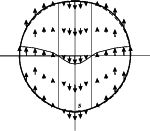 | Рис. 1. Распределение асимметричной силы (стрелки) в меридиональной плоскости вращающегося сфероида (расчет по формуле линейного приближения (6) с учетом (7) и деформации, вызванные этой силой (показаны не в масштабе). Пунктирная линия - контур сфероида, сплошная линия - кардиоидоподобный контур фигуры вращающихся планет, образованной суперпозицией гравитационной, центробежной и асимметричной сил. |
| 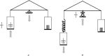 | Рис. 2. Схема измерения вертикальной компоненты асимметричной силы путем взвешивания с использованием вибраций, возникающих спонтанно благодаря люфту в подшипниках ротора гироскопа (а) и возникающих в результате вынужденных колебаний от вращения эксцентрика под основанием весов (б). Пружина над левой чашей - эластичный элемент для поглощения вибраций и недопущения их к гироскопу (левому грузу). Источники вибраций показаны тонкими пересекающимися стрелками. Пустые широкие стрелки - сопряженные асимметричные силы (пара сил), вызывающие отклонения весов при одинаковом для а и б направлении вращения гироскопа. |
При спонтанном возникновении вибраций повторяемость эффекта была невысокой, поскольку регулировать вибрации не было возможности. Козырев сконструировал установку, в которой вибрации создавались искусственно с помощью специального механического эксцентрика, передававшего вибрации регулируемой частоты на опору весов (рис. 2, б). При этом знак эффекта изменился на противоположный по сравнению с измерениями со спонтанным возбуждением вибраций в роторе. Можно было бы предположить, что вибрации каким-то образом искажают результаты взвешивания. Но Козырев трактовал воздействие вибраций иначе [2, с. 349]: при вибрациях коробка с гироскопом перестает быть замкнутой системой. Вибрации являются причинным воздействием, необратимым процессом, который способствует относительному сдвигу центров асимметричных сил разной полярности. Положение источника вибраций фиксирует положение причины в причинно-следственном звене, поэтому и происходит изменение знака эффекта асимметричных сил при переносе источника вибраций с ротора гироскопа на опору весов.
В поздних работах Козырев вместо вибраций использовал другие необратимые процессы: нагревание/охлаждение, пропускание электрического тока и также получал асимметричные эффекты двух полярностей [2, с. 355].
Измерения на весах позволяют определить вертикальную компоненту асимметричных сил. Для измерения горизонтальной компоненты Козырев использовал отвес - длинную нить или тонкую проволоку, на конце которой подвешивался груз в виде гироскопа с горизонтальной осью вращения (рис. 3). При вибрациях, возникавших спонтанно в роторе гироскопа, наблюдалось отклонение отвеса и оно зависело от скорости и направления вращения ротора гироскопа (рис. 3, а). Эффект наблюдался эпизодически, по-видимому он зависел от некоторых внешних условий, не поддающихся идентификации (вариации плотности времени [2, с. 357]). В последующих опытах Козырев создавал регулируемые вибрации точки подвеса (рис. 3, б), в результате получались отклонения отвеса такой же величины, но противоположного знака по сравнению с рис. 3, а при тех же направлении и скорости вращения гироскопа.
| 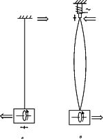 | Рис. 3. Схема измерения горизонтальной компоненты асимметричной силы путем наблюдения отклонения отвеса с использованием вибраций, возникающих спонтанно благодаря люфту в подшипниках ротора гироскопа (а) и возникающих в результате вынужденных колебаний точки подвеса под действием электромагнита (б). Остальные обозначения см. на рис. 2. |
При измерении асимметричной силы на установках с вращающимся гироскопом (или волчком) эффект всегда зависел от направления и скорости вращения гироскопа и всегда был несимметричным. Например, при вращении волчка весом 90 г со скоростью u = 25 м/с по часовой стрелке на весах наблюдалось облегчение на 8 мг, при вращении против часовой стрелки изменения веса не наблюдалось. При горизонтальном положении оси вращения волчка наблюдалось облегчение на 4 мг [2, с. 279, 347]. Козырев объясняет этот результат наложением эффектов вращения Земли и волчка: эффект вращения Земли равен -4 мг. Данное облегчение следует принять как нулевой уровень для отсчета эффекта вращения волчка, тогда последний составит +-4 мг в зависимости от направления вращения.
Здесь интересна количественная сторона этого результата: линейная скорость обсерватории Пулково в результате вращения Земли равна 223 м/с, средняя скорость вращения масс Земли может быть принята равной u* = ωr* = ωR·cosφ*, последняя согласно нашей оценке (см. п.4.2) с использованием формул (6),(7) линейного приближения равна 202 м/с (&phi=64°), при принятии наблюденной Козыревым широты смены знака асиметричной силы φ* = 73°, u* = 135 м/с. Таким образом, величина u-u*, определяющая согласно формуле (6) величину причинной силы от вращения Земли равна 21 и 88 м/с соответственно. Скорость эквивалентного идеального волчка в рассмотренном эксперименте 25 м/с, она значительно ближе к результату нашего расчета. Однако делать выводы из сделанных оценок преждевременно, поскольку имеются неучтенные факторы (различия ориентаций осей вращения Земли и гироскопа) и ряд неисследованных непонятых эффектов, например эффект квантования и отсутствие стабильной повторяемости результатов.
| 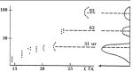 | Рис. 4. Ступенеобразное изменение веса груза (1 кг) под эластичным подвесом (см. рис. 2, б) как функция частоты вынужденных колебаний основания весов [2]. |
Козырев выполнил огромное количество наблюдений с волчками и гироскопами. По их результатам с помощью формулы (3) он определял константу хода времени c2. Полученные значения варьировали в диапазоне 500-700 км/с. Значительный разброс, по-видимому, обусловлен неучетом угла между ортами i и j (4).
Козырев отмечает, что опыты с гироскопами получаются не всегда одинаково легко и что действуют некоторые внешние факторы, не всегда поддающиеся идентификации. Легче получаются опыты без вращающихся гироскопов - в этом случае измеряются асимметричные силы, возникающие только от вращения Земли. Измерения проводятся теми же установками, изображенными на рис. 2, б и 3, б, в которых гироскоп заменен обычным грузом, обязательно наличие источника вибраций, а в опытах по взвешиванию один груз (левый на рис. 2,б) подвешивается на эластичном подвесе, другой же - на жестком. Вибрации от вращающегося эксцентрика передаются через опору центральной призмы на коромысло.
На рис. 4 представлен результат многократного взвешивания в Пулково на весах с регулируемой частотой вибраций, приложенных к основанию весов (см. рис. 2,б). При отсутствии вибраций и малой их частоте изменение веса не наблюдается. На частоте 12- 15 Гц появляется отклонение весов, на частоте 18 Гц отклонение весов стабилизируется и остается таковым до 22 Гц, затем скачком увеличивается вдвое и на частоте 28 Гц - втрое. На частоте 30 Гц ускорения основания весов достигают величины g и измерения становятся невозможными. Таким образом, наблюдается макроскопическое квантование процесса появления причинной асимметричной силы. Величина ступени
ΔF = Fasymz = Fasym·sinφ (9)
зависела только от веса груза F0, их отношение ΔF/F0 было приблизительно постоянным. Подставляя в формулу (6) σgΔV = F0 и Fasym = ΔF/sinφ, получаем
C2 = c2/cos|(i^ω) = ω(r-r*)sinφF0/ΔF. (10)
Эта формула позволяет вычислить c2. Если, согласно [3], полагать c2 известным и равным абсолютной скорости движения Солнечной системы, то по формуле (10) можно определить cos(i^ω) и, следовательно, получить первую информацию о направлении вектора хода времени ic2. Этот вектор направлен вдоль некоторой образующей конуса:
cos(i^ω) = c2/C2 = const.
Продолжим рассмотрение особенностей измерения причинных сил на рычажных весах. Козырев пишет [2, с. 368]: "многократные измерения показали, что хотя ступени утяжеления груза остаются неизменными, но частоты вибраций, при которых они возникают, меняются очень сильно в зависимости от обстоятельств, лежащих вне контроля лаборатории". Существует и сезонный ход: осенью опыты выходят значительно легче, чем весной. Пришлось придти к выводу, что происходящие в природе процессы ослабляют или усиливают рост причинного воздействия (влияния вибраций) в системе. Осуществление различных процессов около системы подтвердило это предположение. Изменение веса оказалось зависящим не только от потока причинности в системе (интенсивности вибраций весов), но и от некоторой величины, зависящей от внешних процессов. Эту величину Козырев назвал плотностью времени. Процессы, усиливающие в принимающей системе (весах) причинное действие, увеличивают в ней плотность времени. Во внешней системе, где эти процессы происходят, увеличивается энтропия и уменьшается организованность. Однако она не пропадает, а излучается, чтобы быть принятой в других системах [8], в частности весами. Процессами, сопровождающимися ростом энтропии и излучением времени, являются: разогрев тела, таяние льда, испарение жидкостей, растворение в воде различных веществ и даже увядание растений. Противоположные им процессы (остывание тела, замерзание воды и др.) поглощают время извне, втягивают организованность из окружающих систем, в частности затрудняют наступление причинного воздействия на вибрирующих весах. Действие всех перечисленных и ряда других процессов на взвешивание (а затем и на другие более чувствительные датчики, такие как крутильные весы, фотоэлементы, резисторы) Козырев изучил экспериментально. Результаты получились согласованными для всех исследованных процессов и датчиков, что подтверждает достоверность выводов Козырева. Кроме того, он исследовал эффект поглощения плотности времени различными веществами и наблюдал на вибрирующих весах уменьшение плотности времени во время пяти затмений Солнца - в 1961, 1966, 1971, 1975 и 1976 гг. [2, с. 370].
Многократно повторенные в различных вариантах и с разными установками измерения были выполнены в Главной астрономической обсерватории Пулково (φ=59°46' с.ш.), а также в Крымской астрофизической обсерватории (φ=44°43' с.ш.), в Ботаническом саду г. Кировска (φ=67°39' с.ш.) и в полутора десятках пунктов высокоширотной (φ=70-84° с.ш.) экспедиции.
На рис. 5 представлены результаты измерений в Пулково и Кировске. Видна пропорциональность между изменениями веса под действием асимметричной силы и самим весом, между отклонениями отвеса и его длиной. Это означает, что относительные величины Fasym z/F и Fasym x/F (для отвеса легко показать, что ΔL/L = Fasym x/F, где x - горизонтальная ось, направленная на север) определяются стабильно. Эти результаты представлены Козыревым в таблице, из которой взяты данные для второй и третьей строк (табл. 1). В последнем столбце даны результаты определения широты по данным измерения асимметричных сил. Совпадение с истинной широтой получилось более чем хорошее.
| 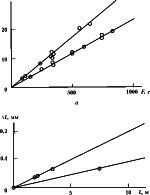 | Рис. 5. Эффект асимметричных сил от вращения Земли, полученный на обсерватории Пулково (φ=59°46') (верхние прямые) и в Кировске на Кольском полуострове (φ=67°39') (нижние прямые): а - изменения веса ΔF при наложении вибраций в зависимости от F, б - горизонтальные отклонения отвеса ΔL при наложении вибраций в зависимости от длины отвеса L [2]. |
Весной 1959 г. Н.А. Козырев и В.Г. Лабейш в составе высокоширотной экспедиции Института Арктики и Антарктики выполнили измерения вертикальной компоненты асимметричных сил по изменению веса груза на эластичном подвесе при вибрации весов в Андерме, Тикси, островах Диксон и Котельный, мысе Челюскин и в ряде пунктов на дрейфующем льду с максимальной широтой 84° 15'. Полный вектор асимметричных сил был получен путем умножения на cosec(φ). На рис. 6 представлены результаты экспедиции совместно с определениями на обсерваториях. На широте 73° наблюдается глубокий минимум асимметричных сил. Знак измеренных сил не изменился, поскольку использованный метод позволяет определить только абсолютную величину асимметричной силы [2, с. 307]. Проведенная на рис. 6 монотонная кривая представляет результаты высокоширотных наблюдений с учетом их знака. (На связь изменения веса груза с вращением Земли указывает также азимутальный эффект. Оказалось, что частоты, т.е. ускорения вибраций, необходимые для появления изменений веса, зависят от азимута коромысла весов: когда груз на эластичном подвесе расположен к югу от стойки весов, асимметричная сила появляется легко, т.е. при минимальной частоте вибраций, и наоборот. По-видимому, это связано с горизонтальной компонентой причинных сил.)
| 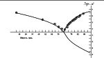 | Рис. 6. Зависимость величины полного вектора асимметричных сил хода времени, вызванных вращением Земли, от географической широты. Асимметричные силы нормированы к силе тяжести [2, с. 307]. |
В табл. 1 значения асимметричной силы для Крымской астрофизической обсерватории, Амдермы и Тикси сняты с рис. 6. В столбце 6 таблицы даны линейные скорости вращения u = ωr = ωR·cosφ соответствующих пунктов, а в столбце 7 - разность u-u* при принятии &phi* = 73° и, следовательно, u* = 135 м/с. Сравнение столбцов 5 и 7 показывает, что ожидаемая (формулы линейного приближения (6) и (10)) пропорциональность u-u* и Fasym/F не наблюдается, а получающаяся из отношения этих величин константа хода времени в 2-5 раз больше, чем из опытов с гироскопами. Анализировать эти результаты и делать выводы на основе только этих наблюдений представляется преждевременным.
Таблица 1.
Результаты измерения асимметричной силы на разных широтах
Место Широта Fasym z/F Fasym x/F Fasym/F u, м/с u-u*, м/с x m y s y s Fa
Крым АО 44° 43' 6,0·10-5 328 193
Пулково АО 59° 46' 3,4·10-5 2,0·10-5 3,96·10-5 233 98 59° 32'
Кировск БС 67° 39' 2,32·10-5 0,93·10-5 2,5·10-5 176 41 67° 58'
Амдерма 69° 45' 1,5·10-5 160 25
Тикси 71° 40' 0,8·10-5 146 11
Сендай 38° 15' 3·10-5 4,8·10-5 364 229
4.6. Опыты с гироскопами после Козырева
Насколько известно, никто не пытался повторить опыты Козырева по измерению причинных сил. Однако серия подобных опытов была выполнена в нескольких организациях на рубеже 1990-х годов независимо от работ Козырева. Это, прежде всего, великолепная работа японских ученых Хайасака и Такеучи [9]. Они, как и Козырев, взвешивали гироскоп на рычажных весах (рис. 7). Гироскопы раскручивались трехфазным током, взвешивание производилось в инерционном режиме, скорость вращения измерялась высокоточным оптическим стробоскопом. Для исключения влияния турбулентности воздуха гироскоп помещался в вакуум, все детали установки были сделаны из немагнитных материалов. Исследовались гироскопы из латуни, алюминия и силиконовой стали. Каждое измерение было повторено 10 раз для каждой из 10 скоростей вращения. Все процедуры были идентичны для левого и правого вращений и без вращения. Результаты этих опытов представлены на рис. 8. При правом вращении наблюдалось уменьшение веса, существенно превышавшее возможные погрешности измерения, при левом вращении вес не изменялся. Авторы понимали, что их результат не укладывается в рамки современной физики. Из него следует кардинальный вывод о нарушении зеркальной симметрии (четности) в гравитации. Поэтому они тщательнейшим образом проанализировали все возможные погрешности как путем расчетов, так и с помощью специальных экспериментов . Хотя все детали были из немагнитных материалов, авторы переворачивали ротор, и каждое второе измерение производилось с перевернутым ротором. Результаты измерений при нормальном и перевернутом роторах неизменно оказывались на одной и той же прямой линии (см. рис. 8). Затем установка была помещена в магнитно заэкранированный цилиндр, в котором геомагнитное поле было ослаблено в сто раз, а потом в специальную комнату, где геомагнитное поле было ослаблено в тысячу раз. Результаты были такими же, как и в нормальном геомагнитном поле. Такой же результат был получен при замене рычажных весов электронными, в которых изменение веса компенсировалось электромагнитными силами. Авторы даже измерили флуктуации скорости вращения каждого ротора: они не превышали 0,2 %. И самое интересное, они измерили скорость смещений центра масс ротора, связанных с вращением. Эта скорость достигала 0,3 мм/с. Таким образом, их роторы были подвержены спонтанным вибрациям, возникавшим, по-видимому, из-за люфта в подшипниках. Согласно работам Козырева, рассмотренным выше, именно вибрации способствуют измерению асимметричных сил. Авторы [ 9 ] этого не знали, но в правильности своих измерений были уверены.
| 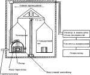 | Рис. 7. Установка для измерения асимметричной силы на вращающемся гироскопе путем взвешивания [9]. |
| 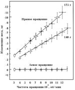 | Рис. 8. Изменение веса вращающихся гироскопов с массой 140 и 175 г при правом и левом вращениях в зависимости от скорости вращения. Массивные точки и крестики - результат при нормальном положении ротора, тонкие квадраты и треугольники - при перевернутом роторе [9]. |
Хайасака и Такеучи 7 марта 1988 г. представили рукопись статьи [9] в престижный журнал быстрых публикаций "Physical Review Letters". Редколлегия поняла значимость статьи и организовала экстренную проверку представленных результатов в лучших лабораториях мира, а рукопись [9] подверглась длительной доработке. 19 августа 1988 г. доработанная рукопись поступила в редакцию и была опубликована только 18 декабря 1989 г. Через 2 месяца в том же журнале и в журнале "Nature" появились 3 короткие, но высокого научного уровня статьи [10 - 12], в которых сообщалось, что в условиях, аналогичных эксперименту Хайасака и Такеучи, они не наблюдали изменения веса вращающегося гироскопа: "null result" как и у Козырева при отсутствии вибраций. Можно предположить, что авторы работ [10 - 12] имели гироскопы с более совершенной механической системой, и в них не возникали вибрации достаточной амплитуды для наблюдения асимметричных сил. Появление работ [10 - 12] дискредитировало результат работы [9], хотя ни одного критического замечания в ее адрес нигде не было высказано. Проблема асимметричных сил была "закрыта".
Хайасака был полностью уверен в правильности своих результатов и продолжал исследования, но его новые работы уже не могли появиться в престижных журналах. В 1995 г. он опубликовал работу [13], в которой предложил теоретическое объяснение наблюденной им асимметрии как "de Rham cohomology effect" на вращающихся объектах: при правостороннем вращении генерируется антигравитация, которая может быть объяснена как втекание энергии топологически возбужденного эфира (физического вакуума) в право-вращающийся объект. Теория основана на сложной математике и не исключено, что она может быть использована для формализации причинной механики Козырева.
В 2000 г. Хайасака опубликовал работу [14] с описанием нового способа измерения асимметричной силы по изменению скорости свободного падения.
Установка изображена на рис. 9. Вращающийся гироскоп свободно падал с верхнего положения под электромагнитом (1) и пересекал лазерные лучи на уровнях AA', BB' и CC'. Время пересечений измерялось электронной схемой (18 - 20) с точностью 10-7 с. Различие времени падения для лево- (L) и право- (R) вращающихся гироскопов составляло 10-5 с.
| 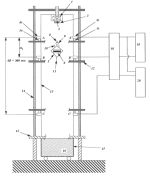 | Рис. 9. Установка для измерения времени падения вращающегося гироскопа [14]: 1 - электромагнит с малой полусферической выемкой 2 для точной фиксации выступа 9 на железной сфере 8; 3 - три специальных контакта, в которые вставляются три электрода 10 для подвода электропитания к гироскопу 6; 4e и 4r - лазерные излучатель и приемник; 5e и 5r - микропреобразователи, разделяющие лазерный луч на горизонтальную и вертикальную части; 7 - капсула гироскопа с направляющим стержнем 11, который пересекает лазерные лучи во время свободного падения; 13 - акриловый цилиндр диаметром 0,4 м; 14 - четыре керамические стойки с коэффициентом теплового расширения 2·10-6/°C; 18-20 - электронная схема для измерения промежутков времени с точностью 10-7 с. |
Далее по простым кинематическим формулам вычислялось ускорение свободного падения. Результаты для каждого измерения, выраженные в галлах (1 Гал = 1 см/с2), представлены в табл. 2.
Средние разности получились такими:
g(L) - g(0) = 0,0029 +- 0,0663 Гал;
g(R) - g(0) = -0,1392 +- 0,0716 Гал;
g(R) - g(L) = -0,142 +- 0,0317 Гал.
Автор проанализировал все возможные погрешности: от приливных сил, от ускорения вращающегося гироскопа земным вращением, от возможной нутации и прецессии падающей капсулы, от воздушных потоков, от взаимодействия остаточных намагниченностей магнита и ротора, от эффекта Барнетта, от температурных вариаций расстояния между уровнями AA', BB' и CC' и др. В итоге Хайасака убедительно обосновал вывод: уменьшение ускорения свободного падения для право-вращающегося гироскопа существенно больше всех возможных погрешностей и может быть принято равным -0,14 +- 0,07 Гал. Приведенная погрешность получена по разбросу результатов 10 измерений (см. табл. 2), она значительно больше всех рассмотренных автором [14] погрешностей. Можно полагать, что разброс связан с неучетом cos(i^j), суточная вариация которого для низкоширотной японской лаборатории должна быть значительной, в частности больше, чем для пунктов Козырева, расположенных севернее.
| Дата 1994 г. | g(L) | g(R) | g(R) - g(L) |
| 27 июля | 980,0965 | 979,9153 | -0,1812 |
| 27 июля | 979,9622 | 979,8324 | -0,1298 |
| 28 июля | 979,9912 | 979,8702 | -0,1210 |
| 8 августа | 980,0322 | 979,9356 | -0,0966 |
| 9 августа | 980,0196 | 979,8185 | -0,2011 |
| 10 августа | 980,1612 | 980,0159 | - 0,1523 |
| 11 августа | 980,1331 | 980,0166 | -0,1165 |
| 12 августа | 980,1577 | 980,0259 | -0,1318 |
| 9 сентября | 980,0653 | 979,8926 | -0,1727 |
| 28 сентября | 980,0613 | 979,9432 | -0,1181 |
Была выполнена обработка графиков, представленных на рис. 8 для правого вращения. Для скорости вращения 12000 об/мин, т.е. при ω = 1256 рад/с, облегчение веса более тяжелого и легкого волчков составило 10,65 и 7,1 мг соответственно. Вес F и эквивалентные радиусы r0 роторов гироскопов равны 175,5 и 139,8 г; 2,26 и 1,85 см. Линейные скорости вращения эквивалентных идеальных гироскопов u = ωr0 равны 28,38 и 23,24 м/с.
Если полученные уменьшения веса отождествить с Fasym, то Fasym/F составит 6·10 Другая трактовка была использована Козыревым (см. п. 4.3). Поскольку при левом вращении изменение веса не наблюдалось, то можно предполагать, что асимметричные силы , возникающие от вращения гироскопа и Земли, компенсируют друг друга. Следовательно, они примерно одинаковы по величине и каждая равна половине облегчения груза, измеренного при правом вращении гироскопа. В этом варианте C2 = 920 км/с, что может соответствовать c2 = 360 км/с, если cos(i^j) < 0,4. Полученное на более тяжелом гироскопе отношение Fasym z/F = 1/2·ΔF/F, приписанное эффекту от вращения Земли, составило 3·10-5. Оно было помещено в нижнюю строку табл. 1, из которой видно, что данный результат количественно не вписывается в закономерность, полученную Козыревым, он примерно вдвое меньше. Если же в табл. 1 подставить полное измеренное отклонение, то согласие с данными Козырева будет хорошее.
Таким образом, по всем имеющимся измерениям Козырева и Такеучи не представляется возможным сделать определенный вывод о том, почему асимметричная сила появляется при одном направлении вращения гироскопа и не появляется при противоположном. Предположение о наложении эффектов от вращения гироскопа и Земли приводит к количественным нестыковкам, описанным выше. Возможно линейное приближение причинной механики неприменимо для описания двух столь разномасштабных вращений. Другое возможное объяснение несимметричности эффекта - это свойство самого хода времени: легко изменяться при одном направлении локального вращения и трудно изменяться ("прочность причинных связей") или совсем не изменяться при противоположном. Такую возможность Козырев также обсуждал.
Обнаруженное Хайасака изменение ускорения свободного падения вращающегося гироскопа не было предсказано Козыревым, и пока не ясно, необходимы ли вибрации для проявления эффекта. Величина эффекта [g(R) - g(0)]/g(0) = 14·10-5 при скорости вращения 18000 об/мин. При приведении к скорости 12000 об/мин эффект составит 9,3·10-5. Отличие этого результата от результата, полученного путем взвешивания (6·10-5), меньше статистической неопределенности, т.е. оба метода, использованные японскими экспериментаторами, дали согласующиеся результаты. Отметим, что в обоих методах использовался один и тот же тяжелый гироскоп (175 г) и можно предполагать одинаковый уровень вибраций в обоих экспериментах.
Фигура Земли изучается двумя методами: геометрическим (геодезическим, аль-тиметрическим) и гравиметрическим. Результатом геометрического метода являются карты поверхности суши и моря, карты поверхности литосферы (на суше совпадают с поверхностью Земли, на водоемах - с их дном), а результатом гравиметрического - потенциал и ускорение силы тяжести и построенная по ним поверхность равного потенциала - геоид. На морях и океанах геоид совпадает с поверхностью воды. На суше он не совпадает с физической поверхностью Земли, в большинстве точек проходит ниже ее. Полученный в результате измерений (в последние годы преимущественно на искусственных спутниках ) потенциал силы тяжести обычно представляется в виде разложения в ряд по сферическим функциям. Нас интересуют зональные гармоники, описывающие зависимость потенциала от широты. Для большей наглядности рассмотрим уравнение идеального (осесимметричного, долготные эффекты осреднены) геоида, полученного по данным спутниковой съемки [15, с. 442]: Два последних члена имеют нечетные степени, они описывают северо-южную (СЮ)-асимметрию идеального геоида, полученного по данным наблюдений. На полюсах высоты геоида различаются на ΔR = Rс - Rю = 34 м. Относительное различие ΔR/2R = 0,25·10-5. По тем же данным вычислено распределение ускорения силы тяжести: Таким образом, согласно гравиметрическим данным ускорение силы тяжести на северном полюсе на 10 мГал больше, чем на южном, т.е. Δg = gс-gю ~ 10 мГал, и, следовательно, Δg/2g ~ 0,5·10-5. В рамках общепринятой теории это различие объясняется тем, что в северных полярных областях породы более плотные, чем в среднем по Земле, а в южных полярных областях - менее плотные. Козырев интерпретировал эти данные иначе, исходя из гипотезы о сферически симметричном распределении плотности. В этом случае из неравенства gс > gю следует, что "северный полюс находится ближе к центру тяжести планеты, чем южный" [2, с. 265], и объясняется это наложением причинной силы, распределение которой представлено на рис. 1.
Геометрический метод дает значительно большую СЮ-асимметрию. На рис. 10 представлена зависимость осредненных по долготе высот рельефа от широты. Кривые для двух полушарий ведут себя существенно по-разному, но именно так, как предсказывает распределение причинных сил (см. рис. 1). Под северным полюсом заметно понижение рельефа до 3,5 км, на широтах от 60 до 70° с.ш. - резкое повышение, отражающее преобладание материков в средних широтах северного полушария. В южном полушарии поведение антисимметричное: повышение на 2-3 км на южном полюсе, резкое понижение между 75 и 65° ю.ш., преобладание океанов в средних широтах. Причинная сила (см. рис. 1), направленная к северу в средних и низких широтах обоих полушарий, "стягивает" литосферу с юга (оставляя место для океанических глубин) к северу ("выпячиваясь" континентами) . В приполярных областях причинная сила направлена на юг (вниз в Арктике, вверх в Антарктике), что качественно объясняет впадину Северного Ледовитого океана и выступ Антарктиды. Относительная асимметрия рельефа полярной литосферы Земли (hс - hю)/2R = (-3,5 - 2)/2·6378 = -43·10-5. Различие наблюдаемых геометрическим и гравиметрическим методами СЮ-асимметрии весьма значительна. Попытка их согласования и количественной оценки действия причинной силы будет сделана в отдельной работе.
Спутниковые миссии к Марсу, особенно Mars Orbiter Laser Altimeter (MOLA) - эксперимент в конце 1990-х годов, позволили получить высокоточные данные о рельефе и гравитационном поле на Марсе [16, 17]. Самым впечатляющим результатом явилось обнаружение СЮ-асимметрии фигуры Марса: "южный полюс лежит на 6 км выше, чем северный", причем большая часть этой высотной асимметрии обусловлена не локальной топографией, а формой планеты: "центр масс планеты смещен на 3 км к северу от ее геометрического центра" [16]. Первоначальным объяснением СЮ-асимметрии было падение очень большого небесного тела (точно близ полюса и на Марсе, и на Земле!). Однако совместный анализ топографических и гравиметрических данных на Марсе не подтвердил эту гипотезу и ведущие геологи MOLA-эксперимента вынуждены были прибегнуть к туманному предположению : " СЮ-асимметрия наиболее вероятно обусловлена внутренними процессами, такими как плитовая тектоника и мантийная конвекция" [16, 17]. Коэффициент СЮ-асимметрии для Марса составляет (Rс - Rю)/2R = (3376,2 - 3382,6)/2·3389,5 = -94·10-5.
Наибольшую СЮ-асимметрию причинная механика предсказывает для больших быстро вращающихся планет Сатурна и Юпитера. Козырев анализировал фотоснимки этих планет, полученные до 1958 г. с поверхности Земли, и обнаружил лежащую на уровне погрешности СЮ-асимметрию: 0,007 для Сатурна и 0,003 для Юпитера [1, 2]. Комиссия, назначенная для проверки результатов причинной механики, не обнаружила на снимках Сатурна и Юпитера СЮ-асимметрии, отметив трудности ее определения из-за асимметричного расположения полос на диске Юпитера [18]. Автору не известны другие оценки СЮ-асимметрии этих планет, хотя можно ожидать, что по данным миссий к Юпитеру и его спутникам такие оценки можно сделать с достаточной точностью.
Жидкое, преимущественно железное ядро Земли имеет радиус 3490 км, внутри его находится более тяжелое твердое, по-видимому, железо-никелевое внутреннее ядро с радиусом 1220 км (рис. 11). Причинная сила изменяет знак на расстоянии 1860 км от оси вращения Земли. Таким образом, в периферических частях жидкого ядра она направлена на север, а в приосевых - на юг. В результате в меридиональных плоскостях должны образоваться вихри причинных сил, показанные на рис. 11, которые вызовут в жидком ядре движение в меридиональных плоскостях. Действие силы Кориолиса будет отклонять эти движения, что может привести к образованию зональных кольцевых течений. Хотя причинные силы невелики, они действуют постоянно, и их результирующий эффект может быть заметным в формировании конвективных течений в жидком ядре. Причинные силы следует учитывать, например, в задачах геомагнитного динамо, особенно в периоды смены полярности геомагнитного поля. Твердое внутреннее ядро целиком находится в зоне действия причинных сил, направленных на юг, и эти силы могут сместить внутреннее ядро к югу от центра Земли.
Козырев постулировал направленность времени, связал с ней направленность пространственных вращений, ввел константу хода времени и получил в линейном приближении выражение асимметричной (или причинной) силы, возникающей на вращающихся объектах - в этом суть причинной механики. Измерение причинной силы позволило Козыреву обосновать фундаментальный вывод: время несет момент вращения и энергию, но не импульс. При вычислении константы хода времени получается значительный разброс, что, в первую очередь, связано с недоучетом геофизического фактора, а именно с ориентацией измерительной лаборатории относительно звездных координат. Необходимость такого учета следует из трактовки, предложенной автором в 1995 г.: константа хода времени равна скорости абсолютного движения, образованного суперпозицией космологических вращений. В настоящей статье собраны результаты измерений асимметричной силы на различных широтах Земли, уточнено выражение причинной силы Козырева и выполнен ее расчет для реальной Земли. Получившееся небольшое несовпадение с данными наблюдения по всей вероятности свидетельствует о некотором отклонении от линейного приближения, принятого в причинной механике. Важным геофизическим следствием причинной механики является северо-южная асимметрия вращающихся тел. На Земле и на Марсе СЮ-асимметрия надежно установлена и не имеет пока приемлемого объяснения. Уже один этот факт говорит о том, что причинная механика заслуживает внимания и развития на современном уровне.
Н.А. Козырев [1, 2] ввел вектор хода времени iC2, в котором скорость перехода причины в следствие c2 - фундаментальная константа нашего мира, а орт i Н.А. Козырев полагал направленным от причины к следствию и, следовательно, зависящим от характера конкретного причинно-следственного события.
В настоящей работе предлагается альтернативная трактовка, в которой как модуль, так и направление вектора хода времени iC2 предполагаются универсальными " константами " нашего мира, причем не всей Вселенной, а той ее части, которая связана с Солнечной системой в настоящую эпоху. В других частях Вселенной и в другие эпохи этот вектор может быть существенно другим. Предполагаемая трактовка соответствует духу причинной механики Н.А. Козырева, она читается между строк его работ, но не была высказана им, по-видимому, потому, что подтверждающие ее данные появились в основном после его смерти, в 1983 г.
Предположим, что C2 равно линейной скорости абсолютного движения Земли, образованного суперпозицией нескольких космологических вращений: Земли вокруг Солнца, Солнечной системы вокруг центра масс Галактики, Галактики вокруг своего Аттрактора и т.д. При этом орт i может быть рассчитан, когда будет установлен закон сложения компонент хода времени от каждого из составляющих вращений или определен из серии экспериментов, адекватной для нахождения i.
Сделанное предположение подразумевает существование неподвижного эфира или физического вакуума. Принятая концепция абсолютного движения не противоречит теории относительности (ТО). Во-первых, ТО признает абсолютный характер вращательного движения. Во-вторых, сущность ТО и ее отличие от предшествующих теорий составляет не принцип относительности (известный в древности, затем Галилею, Ньютону и др.), а новые представления о пространстве и времени, выражающиеся в геометрии четырехмерного мира Минковского, в инвариантности пространственно-временного интервала относительно преобразования группы Лоренца. Упрощенно можно сказать так: геометрия Минковского для инерциальных систем составляет содержание специальной теории относительности (СТО), а ее обобщение на неинерциальные системы, учитывающее гравитацию,- содержание общей теории относительности (ОТО). Таким образом, термин "теория относительности" является неудачным, о чем писали Минковский, Мандельштам, Терлецкий и др. Уместно напомнить, что после ранних работ, отрицавших существование эфира, Эйнштейн пришел к убеждению о необходимости его признания. Вот два отрывка из его работы 1920 г. "Эфир и теория относительности" [19]: "Отрицать эфир - это, в конечном счете, значит принимать, что пустое пространство не имеет никаких физических свойств. С таким воззрением не согласуются основные факты механики". "ОТО наделяет пространство физическими свойствами; таким образом, в этом смысле эфир существует. Согласно ОТО, пространство немыслимо без эфира; действительно , в таком пространстве не только было бы невозможно распространение света, но и не могли бы существовать масштабы и часы и не было бы никаких пространственно-временных расстояний в физическом смысле слова. Однако этот эфир нельзя представить себе состоящим из прослеживаемых во времени частей; таким свойством обладает только весомая материя; точно так же к нему нельзя применять понятие движения". В заключение экскурса в ТО напомним о мало известной работе Н.А. Козырева [20], в которой он описывает наблюдения посредством времени сигналов от звезд или их скоплений из прошлого (где они видны сейчас), из настоящего (где они находятся сейчас), и из будущего (где они будут, когда свет от Земли дойдет до них), т.е. наблюдения трех точек светового конуса. Эти наблюдения Н.А. Козырев считает астрономическим доказательством реальности мира Минковского, что дает строгое обоснование ТО.
В пользу концепции абсолютного движения и возможности определения его параметров свидетельствуют новые данные астрономических и гелио-геофизических наблюдений и физических экспериментов, собранные в табл. 3.
Космическое микроволновое фоновое радиоизлучение [4, 21-23]. Тщательные наблюдения нескольких групп исследователей обнаружили, что на основной изотропный фон радиоизлучения наложена дипольная часть порядка 10-3, которая была объяснена эффектом Доплера при движении Солнечной системы относительно изотропной части фонового излучения. Полученные модуль и угловые координаты апекса абсолютной скорости vn Солнечной системы представлены в первых четырех строках табл. 3. В спутниковых измерениях последних лет была достигнута точность, позволившая уверенно зарегистрировать сезонные вариации, обусловленные орбитальным движением Земли вокруг Солнца, что является доказательством реальности зарегистрированного абсолютного движения и достоверности оценки его скорости.
Анизотропия потока мюонов [24]. Использовались измерения телескопа космических лучей, составленного из двух счетчиков Гейгера-Мюллера, установленного в Швейцарии на высоте 420 м над уровнем моря. За 18 лет было накоплено более 32 тысяч измерений, покрывающих все направления небесной сферы. По полученной анизотропии интенсивности потока мюонов вычислены параметры абсолютной скорости Солнечной системы (строка 5 табл. 3).
Оптические измерения в лаборатории. Опыт Майкельсона-Морли и другие аналогичные эксперименты по обнаружению абсолютного движения на основе измерения эффектов второго порядка относительно v/c дали, как принято считать, отрицательный результат. Однако имеются публикации [25, 27], критикующие методику и истолкование этих опытов. Более простыми и однозначными для интерпретации являются наблюдения эффектов первого порядка относительно v/c. Астрономический вариант такого измерения был предложен Максвеллом в 80-е годы XIX века путем наблюдения времен пробега света от спутника Юпитера к Земле при их различном взаимном расположении с синхронизацией времени по моментам затмения спутника, как это делал еще Ремер при первых измерениях скорости света в 1675 г. Хотя наблюдения за спутниками Юпитера и их затмениями ведутся регулярно, определение абсолютной скорости по этим данным, насколько известно автору, не опубликовано.
Две схемы лабораторных экспериментов по определению скорости Земли относительно светоносного эфира в линейном приближении v/c были предложены в 1887 г. Майкельсоном и Морли. В каждой из них было два источника, посылающих два луча света в противоположных направлениях, и устройства сравнения параметров, зависящих от разности скоростей двух лучей. Успешная реализация такого эксперимента осуществлена только в 1975 и 1984 гг. С. Мариновым в двух вариантах [26]: со связанными вращающимися зеркалами и дисками с отверстиями. Источниками света были лазеры, прецизионное сравнение скоростей противоположно направленных лучей осуществлялось дифференциальным фотоэлектрическим устройством. В работе [27] описан прибор для определения абсолютной скорости Земли, основанный на высокоточном измерении аберрации лазерного луча при различной ориентации прибора. Результаты двух работ представлены в строках 6-8 табл. 3.
Примечание: l*, b* - галактические координаты.
Нестационарные явления на Солнце и на Земле. В серии работ А.А. Шпитальной и А.А. Ефимова [28, 29] обнаружена пространственная анизотропия распределения мгновенных проекций на небесную сферу радиусов-векторов эпицентров некоторых нестационарных явлений на Солнце (вспышек, эруптивных протуберанцев, солнечных пятен, полярных факелов) и землетрясений на Земле. Авторы считают, что полученная анизотропия обусловлена влиянием абсолютного движения Солнечной системы и может быть использована для определения направления этого движения (строки 9-15 табл. 3). Сопоставление всех данных таблицы показывает, что определение параметров абсолютного движения столь различными методами дает удовлетворительно сходящиеся результаты.
Итоговый результат. Учитывая высокую точность и достоверность астрономических данных по микроволновому фоновому радиоизлучению и предварительный характер мю-онных, оптических и особенно гелио-геофизических результатов, определим параметры абсолютного движения Солнечной системы в современную эпоху только по астрономическим данным. После осреднения и округления данных строк 1-4 табл. 3 находим
v0 = 360 км/с, α = 170°, δ = -7°, т.е. апекс абсолютного движения направлен к точке небесной сферы, лежащей в созвездии Чаши близ его границ с созвездием Льва. Мы воздержались от указания весьма малой погрешности результата, следующей из данных таблицы, поскольку абсолютное движение Земли, с которой проводились наблюдения, имеет значительный сезонный ход и нет уверенности, что исключены все возможные систематические ошибки.
Сезонная вариация абсолютной скорости. Ближайшая к апексу абсолютного движения Солнечной системы точка эклиптики имеет координаты α = 170°, δ = 5° в созвездии Льва (все цифровые значения даны приближенно, их цель только проиллюстрировать основные идеи). Для земного наблюдателя Солнце проходит через эту точку звездного неба 10-11 сентября. Рассматривая орбитальную скорость Земли в различные сезоны (рис. 12, в), легко видеть, что 10 декабря угол между абсолютной скоростью Солнца и орбитальной скоростью Земли минимален (12°). Следовательно, абсолютная скорость Земли в декабре максимальна, а в июне, соответственно, минимальна. В весенние и осенние месяцы орбитальное движение Земли имеет значительную составляющую, перпендикулярную v0, в итоге наблюдается сезонный ход аберрации абсолютной скорости Земли, достигающий 5°.
Эти данные вместе со сформулированной гипотезой о равенстве c2 модулю скорости абсолютного движения Земли позволяют естественным образом понять некоторые ранее необъяснимые сезонные зависимости, например полученные Н.А. Козыревым при трехлетнем наблюдении прочности причинных связей, фиксируемых по отклонению маятника на вибрирующем подвесе. Н.А. Козырев пишет [2, с. 309-310]: "Получается замечательная общая закономерность условий появления эффекта: причинные связи легче всего могут быть изменены поздней осенью и зимой. Летом же они делаются наиболее прочными и летом эффект на маятнике еще ни разу не наблюдался".
Галактическое вращение. Абсолютное движение Солнечной системы слагается из орбитального движения vорб вокруг центра масс Галактики, вращательного движения Галактики как целого со скоростью Vj вокруг своего аттрактора - центра масс Местной группы скопления галактик и последней вокруг Великого Аттрактора... По астрономическим данным vорб = 250 км/с и орбита круговая. По комплексу данных астрономии и геохронологии предложена [28] эллиптическая орбита с эксцентриситетом 0,17, периодом обращения Tг = 217 млн лет и орбитальными скоростями 300 и 220 км/с в пери- и апогалактии соответственно. В настоящее время Солнце приближается к перигалактию и имеет орбитальную скорость, практически равную максимальной - 300 км/ с. Вычитая ее векторно (рис. 12, б) из определенной по данным микроволнового фонового радиоизлучения абсолютной скорости v0, получаем Vj = 600 км/с в направлении созвездия Гидра - Центавра. Таким образом, в настоящую эпоху движение Солнца по галактической орбите почти противоположно движению Галактики (угол 155°). Через половину галактического года, а также половину галактического года назад (вообще +-Tг/2) эти скорости будут направлены почти в одну сторону (угол 25°) и абсолютная скорость Солнечной системы составит примерно 800 км/с, причем такой же результат получается и в предположении круговой галактической орбиты Солнечной системы.
Интересно отметить совпадение полученной абсолютной скорости Солнечной системы с отношением e2/h = 350 км/с, где e - заряд элементарной частицы; h - постоянная Планка. О совпадении константы c2 с e2/h неоднократно писал Н.А. Козырев и придавал этому особый смысл [1, 2]. Если совпадение e2/h с абсолютной скоростью Солнечной системы не случайно, то это ставит перед физиками проблему - является ли отношение e2/h универсальной константой или оно, а значит и другие константы, зависят от скорости движения системы относительно физического вакуума и тогда на противоположной стороне галактической орбиты это отношение может увеличиться более чем вдвое? Не исключено, что при целенаправленном исследовании будут найдены геологические и (или) астрономические данные , которые позволят ответить на поставленный вопрос уже в обозримом будущем, не ожидая 100 млн лет.
Отметим также, что оси вращения Солнца, Земли и планет в пределах +-13° перпендикулярны направлению абсолютного движения v0 [28]. По-видимому, это не случайно и может быть исследовано и понято в процессе дальнейшего развития причинной механики. Вполне возможно, что оси вращения планет (и звезд?) имеют тенденцию ориентироваться вдоль орта i. Тогда среднее направление осей планет может служить первой информацией о неизвестном нам пока направлении i.
1. Рассмотренные проблемы затрагивают глубинные свойства материи , пространства и времени. Если предложенная гипотеза, конкретизирующая одно из положений причинной механики Н.А. Козырева, верна (а это поддается экспериментальной проверке ) , то это означает, что галактическое и супергалактические вращения при всей малости градиентов скорости в пределах Солнечной системы все же оказывают влияние на свойства и поведение материальной субстанции физического вакуума и через него - на физические законы и константы.
2. В природе не существует замкнутых систем: разномасштабные вращения, включая галактическое и супергалактическое, воздействуют на физический вакуум любой локальной области, а именно вносят в нее (или уносят из нее) посредством хода времени (по терминологии Н.А. Козырева) энергию и момент вращения, но не импульс [1, 2].
3. Вращательное движение, особенно гиромагнитное, взаимодействует с физическим вакуумом, при этом его энергия может усиливаться или ослабевать в зависимости от ориентации вращения относительно вектора i . Это открывает перспективу объяснения ряда парадоксов, наблюдаемых в экспериментах с вращающимися объектами и последующего их использования для извлечения энергии физического вакуума.
1. Козырев Н.А. Причинная или несимметричная механика в линейном приближении. - Пулково: ГАО, 1958. - 90 с.
2. Козырев Н.А. Избранные труды. - Ленинград: Изд-во Ленинград. ун-та, 1991. - 445 с.
3. Рокитянский И.И. Абсолютное движение как источник возникновения причинных сил // Докл. НАН Украины. - 1995. - N10. - С. 76-80.
4. Смут Дж.Ф. Анизотропия реликтового излучения : открытие и научное значение // Успехи физ. наук. - 2007. - 177. - С. 1294-1317.
5. Шихобалов Л.С. Основы причинной механики Н.А. Козырева // Изучение времени: концепции, модели, подходы, гипотезы и идеи / Ред. В.С. Чураков. - Шахты: Изд. ЮРГУЭС, 2005. - С. 105-125.
6. Браун Д., Массет А. Недоступная Земля. - Москва: Мир, 1984. - 262 с.
7. Anderson D.L., Hart R.S. An Earth model based on free oscillations and body waves // J. Geophys. Res. - 1976. - 81. - P. 1461-1475.
8. Рокитянский И.И. Квазиспонтанные вариации физических параметров // Геофиз. журн. - 2000. - 22, N3. - С. 50-56.
9. Hayasaka H., Takeuchi S. Anomalous weight reduction on a gyroscope's right rotation around the vertical axis on the Earth // Phys. Rev. Lett. - 1989. - 63. - P. 2701-2704.
10. Faller J.E., Hollander W.J., Nelson P.G., McHugh M.P. Gyroscope-weighting experiment with a null result // Phys. Rev. Lett. - 1990. - 64. - P. 825-826.
11. Nitschke J.M., Wilmarth P.A. Null result for the weight change of a spinning gyroscope // Phys. Rev. Lett. - 1990. - 64. - P. 2115-2116.
12. Quinn T.J., Picard A. The mass of spinning rotors: no dependence on speed or sense of rotation // Nature. - 1990. - 343. - P. 732-735.
13. Hayasaka H. Parity breaking of gravity and generation of anti-gravity due to the de Rham cohomology effect on an object's spinning // Selected papers of 3 {rd} Int. conf. on problems of space, time and gravitation (May 23-28, 1994). - St.-Petersburg: Politechnika, 1995. - С. 290-302.
14. Hayasaka H. Generation of anti-gravity and complete parity breaking of gravity // Galilean Electrodynamics. - 2000. - 11. - Spec. Iss. 1. - Spring. - P. 12-17.
15. Грушинский Н.П. Теория фигуры Земли. - Москва: Наука, 1976. - 512 с.
16. Ladbury R. Rediscovering Mars // Physics Today. - 1999. - 52, N10. - P. 33-35.
17. Smith D.E., Zuber M.T. and al. The global topography of Mars and implications for surface evolution // Science. - 1999. - 284. - P. 1495-1503.
18. Поттер Х.И., Стругацкий Б.Н. К вопросу об асимметрии фигур больших планет // Изв. ГАО в Пулкове. - 1962. - 23, вып. 1. - С. 145-150.
19. Эйнштейн А. Собрание научных трудов. Т. 1. - Москва: Наука, 1965. - С. 682- 689.
20. Козырев Н.А. Астрономическое доказательство реальности четырехмерной геометрии Минковского // Проблемы исследования Вселенной. - 1980. - Вып. 9. - С. 85-93.
21. Lubin P., Villela T., Epstein G., Smoot G. A map of the cosmic background radiation at 3 millimeters // Astrophys. J. Lett. - 1985. - 298. - L1-L5.
22. Klypin A.A., Strukov I.A., Skulachev D.P. The relict mission: results and prospects for detection of the microwave background anisotropy // Mon. Not. R. Astronom. Soc. - 1992. - 258. - P. 71-81.
23. Torres S. Cosmological implications of COBE's results // Astrophys. space sci. - 1994. - 214, N1/2. - P. 115-126.
24. Monstein C., Wesley J.P. Solar system velocity from muon flux anisotropy // Apeiron. - 1996. - 3, N2. - P. 33-37.
25. Колоколов Е.П. К теории опыта Майкельсона-Морли // Проблемы исследования Вселенной. - 1974. - Вып. 2. - С. 174-181.
26. Маринов С. Оптические измерения абсолютной скорости Земли // Проблемы ис -следования Вселенной. - 1991. - Вып. 15. - С. 357-364.
27. Уткин И.П. Способы и устройства определения скорости абсолютного движения системы // Проблемы исследования Вселенной. - 1994. - Вып. 17. - С. 15-22.
28. Ефимов А.А., Заколдаев Ю.А., Шпитальная А.А. Астрономические основания абсолютной геохронологии // Проблемы исследования Вселенной. - 1985. - Вып. 10. - С. 185-201.
29. Ефимов А.А., Шпитальная А.А. О движении солнечной системы относительно фона Вселенной // Проблемы исследования Вселенной. - 1991. - Вып. 15. - С. 345-349.
Страницы друзей "Темного леса"
Последнее изменение страницы 7 Feb 2021
5. Геофизические следствия
5.1. Фигура Земли
R(м) = 6378165 - 21464sin2φ + 74sin4φ - 24sinφ + 41sin3φ. (12)
g(мГал) = 978029 + 5241sin2φ - 56sin4φ - 7sinφ + 12sin3φ (13)
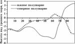
Рис. 10. Осредненные по долготе высоты поверхности литосферы (на суше совпадают с дневной поверхностью Земли, на акваториях - с их дном) для Северного и Южного полушарий, отсчитанные от уровня моря, в зависимости от широты.
5.2. Фигура Марса и планет
5.3. Асимметричная сила в ядре Земли
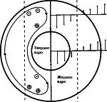
Рис. 11. Асимметричная сила в ядре Земли (правая сторона) и создаваемое ею вихревое движение в жидком ядре (левая сторона). Кружки с точками и крестиками показывают направление зональных потоков, вызванных силой Кориолиса.
6. Заключение
Приложение. Сокращенное изложение работы [3] с минимальным добавлением новых данных
Гипотеза абсолютного движения
Таблица 3.
Данные о параметрах абсолютного движения Солнечной системы
Номер Экваториальные координаты направления уи va, км/с Ссылка
α° δ°
Астрономические данные по дипольной составляющей микроволнового фонового радиоизлучения
1 168 +- 1,5 1 6 If 5 378 +- 17 [21]
2 169,5 +- 2,4 -7,5 +- 2,5 348 +- 30 [22]
3 169,7 +- 0,6 -7,1 +- 0,6 368 +- 10 [23]
4 l* = 263,86° b* = 48,25° 368 +- 2 [4]
Данные по анизотропии потока мюонов в составе космических лучей
5 165 +- 50 -1 +- 10 360 +- 180 [24]
Данные лабораторных оптических измерений
6 187+-15 -24+-7 362+-40 [26]
7 200 +-5 -27 +-4 303+-20 [26]
8 300 [27]
Гелио-геофизические данные определения анизотропии пространственного распределения мгновенных проекций на небесную сферу эпицентров нестационарных явлений на Солнце и на Земле
9 176 +10 Солнечные вспышки [28, 29]
10 178 +8 Эруптивные протуберанцы [28, 29]
11 163 +16 Солнечные пятна (S > 1000) [28, 29]
12 127 +23 Солнечные пятна (S < 1000) [28, 29]
13 187 +6 Полярные факелы [28, 29]
14 169 -7 Сильнейшие землетрясения [28, 29]
15 160 +3 Глубокофокусные землетрясения [28, 29]
vорб ~ 220 км/с - апогалактий 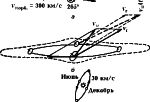
Рис. 12. Составляющие абсолютной скорости:
а - галактическая орбита Солнца, принятая, согласно [28], в виде эллипса с большой полуосью 9 килопарсек и эксцентриситетом 0,17 (положение Солнца в современную эпоху соответствует его приближению к перигалактию.
б - галактика в разрезе, галактическая орбита Солнечной системы и сложение скоростей для современной эпохи и для эпохи +- половина галактического года;
в - ориентация земной околосолнечной орбиты относительно Галактики и абсолютного движения. Ось эклиптики перпендикулярна vn, что обусловливает сезонный ход абсолютной скорости Земли +-30 км/с с максимумом в декабре, минимумом в июне и максимальной аберрацией осенью и весной.
vорб ~ 300 км/с - перигалактий
(t = +-108 млн лет)
Выводы
Список литературы
ПОДЕЛИТЬСЯ:
{kind=link}
{kind=link}
{kind=link}
{kind=link}
{kind=link}
{kind=link}
{kind=link}
{kind=link}
{kind=link}
{kind=link}
{kind=link}
{kind=link}
{kind=link}